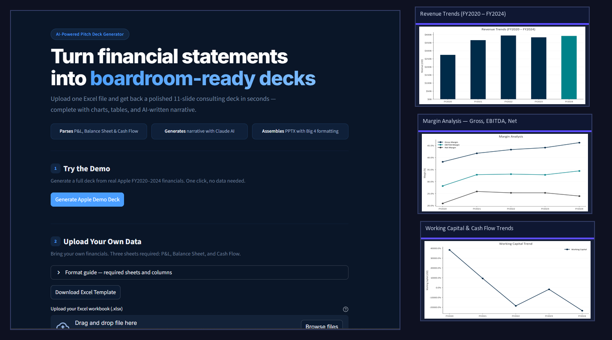
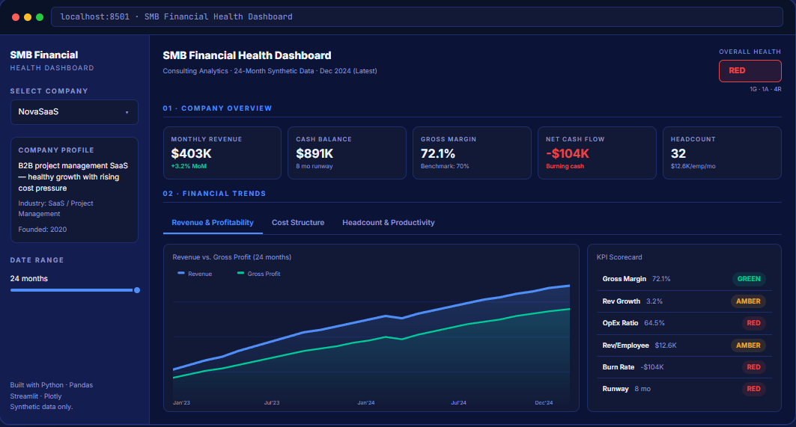

Contact Me
Interested in working together or have any questions? I will literally instantly respond to you. I promise.
Message sent! Thanks for reaching out — I'll get back to you shortly.
I build automated data pipelines and software tools — from ETL systems processing 44.6M+ rows of federal data to web apps that turn raw data into decisions. Now leading technical direction as Partner & CTO at DIBBS Navigator.
A look at projects spanning data pipelines, financial analytics, AI tools, and web development.

Builds polished Big 4-style PowerPoint pitch decks from Excel financial data, then uses Claude AI to generate narrative insights for each slide.

Consulting analytics tool analyzing SaaS financial health — KPI scorecards, RAG benchmarks, P&L waterfall charts, and auto-generated insights.
Software engineer and technical leader based in Atlanta. I'm Partner and CTO at DIBBS Navigator, where I own the technical direction behind our defense supply chain data products — including the Python ETL pipelines I built to load 880K+ SAM.gov records into SQL Server each month and harden a 44.6M-row monthly DLA import, replacing a manual 40+ step process.
Alongside that, I'm a Total Rewards Analyst at Papa Johns, applying the same data instincts to turn compensation and benefits data into decisions. Previously a Software Sales Engineer at REPAY, where I was the technical liaison for enterprise payment clients — leading demos, authoring integration blueprints, and onboarding 20+ client integrations.
RPI graduate (B.S. IT & Web Science, Economics minor) working mostly in Python, SQL Server, JavaScript/TypeScript, Node.js, React, and REST APIs, with Azure, AWS, and Docker in the mix.
Partner & CTO and data engineer with experience building automated ETL pipelines, payment integrations, and software tools. Strength in turning complex data problems into reliable, production-ready systems, and in leading technical direction. Background spanning technical leadership, data engineering, sales engineering, and full-stack development.
B.S. Information Technology & Web Sciences (Minor: Economics)
Graduation: May 2025 | GPA: 3.22 / 4.00
Certification: Oracle Cloud Infrastructure 2023 Certified Foundations Associate
Interested in working together or have any questions? I will literally instantly respond to you. I promise.